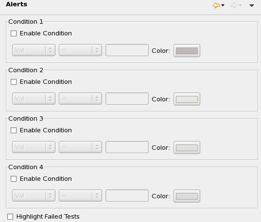
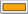

Alerts preference settings
The Alerts preference page lets you specify which table cells in the summary views and raw data views you want highlighted and how SmarTest should highlight them.
You specify the cells to highlight by entering up to four conditions. Each cell that meets one of the conditions is highlighted with the color you chose for that condition.

These settings are available for each condition:
- Enable Condition: If this box is checked, SmarTest applies the corresponding condition to cells in the summary and raw data views. If it is not checked, the condition is ignored and all other options for that condition are disabled.
- First drop-down list: The table column that is compared with the specified value. Only cells in this column can be highlighted by the condition.
- Second drop-down list: The comparison operator to use.
- Text field: The value with which to compare the value from the chosen column.
- Color: The color with which cells are highlighted that match the condition. Clicking the color swatch displays a color picker.
If the appropriate options in the Annotations preference page are checked, rows with highlighted cells are also indicated by triangles in the left-hand margin of the summary view and/or colored rectangles in the right-hand margin.
There is one additional global setting:
- Highlight Failed Tests: If this option is checked, all rows with failed tests in Raw data views are highlighted in red. Also, all rows in summary views that summarize at least one failed test are highlighted.
Example
Check Enable Condition in the Condition 1 section and specify this condition:
- First drop-down list: Min
- Second drop-down list: <
- Text field: 2.4
- Color:

All rows in the summary view will be highlighted in orange that have a value below 2.4 in the Min column.
Functional changes
- Introduced in SmarTest 7.2.0